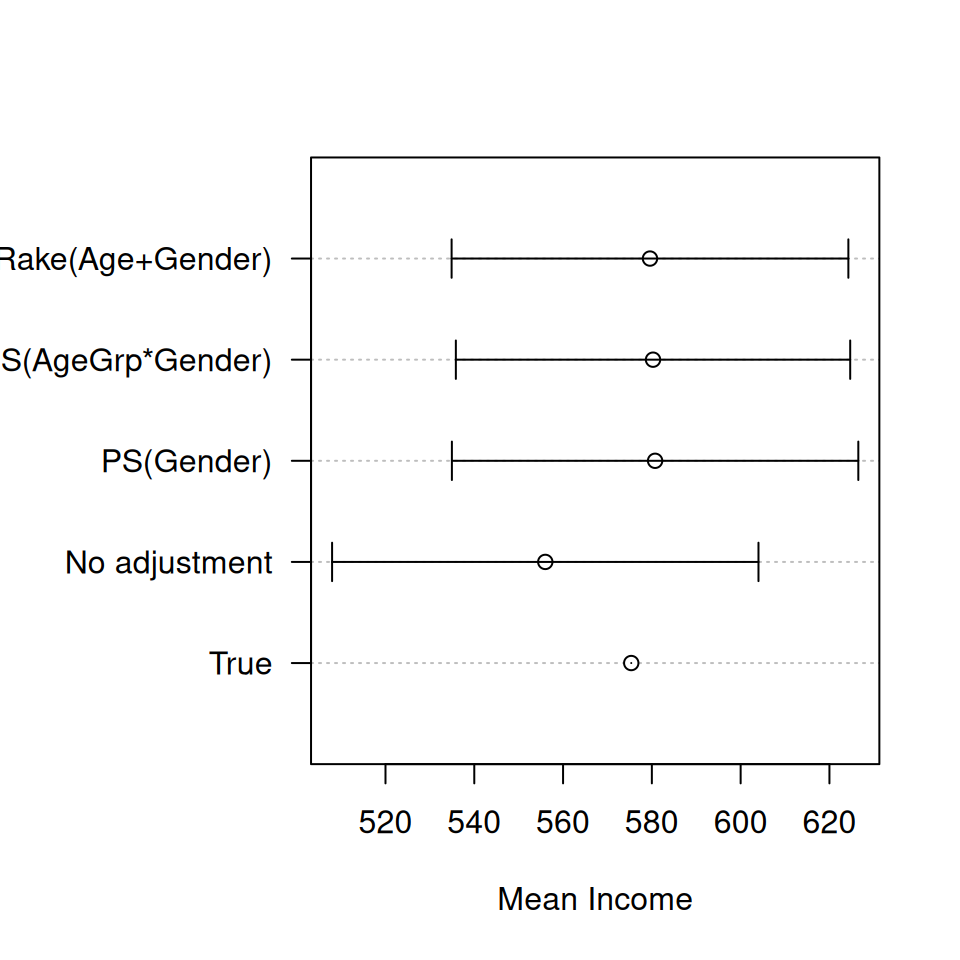
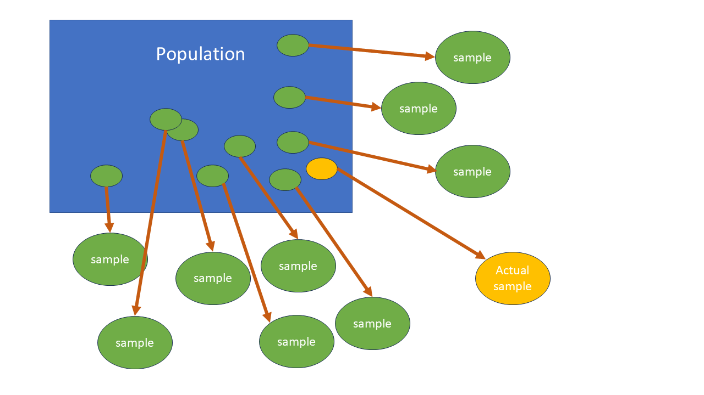
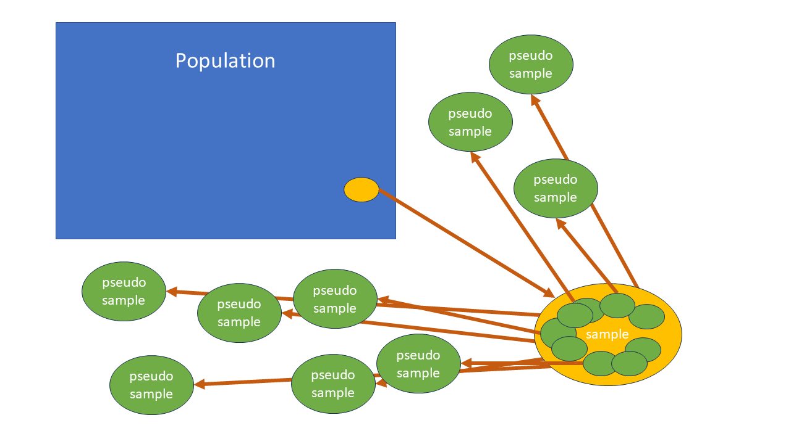

8 Weight adjustments
\(\DeclareMathOperator*{\argmin}{argmin}\) \(\newcommand{\var}{\mathrm{Var}}\) \(\newcommand{\bfa}[2]{{\rm\bf #1}[#2]}\) \(\newcommand{\rma}[2]{{\rm #1}[#2]}\) \(\newcommand{\estm}{\widehat}\)
8.1 Weight Calibration
At the end of a survey we may find ourselves in the undesirable situation that
- Purely by chance, the sample is somewhat unbalanced: e.g. by chance we may have selected many more males than females, or more large households than small ones, or
- We may have had unit nonresponse - i.e. there may be selected units from which we have collected no data. In the case of human subjects this may have been from a failure to contact the selected person, or the refusal of the person to answer any of our questions. (We may have also had item nonresponse, where some items on a questionnaire weren’t answered: we’ll deal with that in the next Chapter.)
In both cases we are in the situation that our sample, even using its sampling weights, is not a good representation of the population from which it is drawn.
For example consider the SURF dataset, which is a synthetic sample of 200 individuals between the ages of 15 and 45. The first 10 rows are shown below.
| Personid | Gender | Qualification | Age | Hours | Income | Marital | Ethnicity | AgeGrp | bigN | weight |
|---|---|---|---|---|---|---|---|---|---|---|
| 1 | female | school | 15 | 4 | 87 | never | European | 15-24 | 1972719 | 9863.595 |
| 2 | female | vocational | 40 | 42 | 596 | married | European | 35-45 | 1972719 | 9863.595 |
| 3 | male | none | 38 | 40 | 497 | married | Maori | 35-45 | 1972719 | 9863.595 |
| 4 | female | vocational | 34 | 8 | 299 | never | European | 25-34 | 1972719 | 9863.595 |
| 5 | female | school | 45 | 16 | 301 | married | European | 35-45 | 1972719 | 9863.595 |
| 6 | male | degree | 45 | 50 | 1614 | married | European | 35-45 | 1972719 | 9863.595 |
| 7 | female | none | 36 | 12 | 201 | other | European | 35-45 | 1972719 | 9863.595 |
| 8 | male | degree | 35 | 45 | 934 | previously | European | 35-45 | 1972719 | 9863.595 |
| 9 | female | vocational | 38 | 26 | 624 | married | European | 35-45 | 1972719 | 9863.595 |
| 10 | male | school | 37 | 50 | 533 | previously | European | 35-45 | 1972719 | 9863.595 |
The dataset contains a mixture of numerical and categorical variables, all with very
self explanatory names (except note that Income and Hours are weekly quantities,
and also that the income values are somewhat old!). We’ll treat it as a SRSWOR from
the New Zealand population between the ages of 15 and 45.
The total population in this age range is \(N=1.972719\times 10^{6}\), the sample size is \(n=200\), and so the weight of each sampled individual is \[ w = \frac{N}{n} = \frac{1.972719\times 10^{6}}{200} = 9863.6 \] Let’s specify this simple random sampling design to R:
and then estimate the mean income:
## mean SE
## Income 575.36 24.508We should note that the mean income differs considerably between males and females.
## Gender Income se
## male male 732.8172 37.02642
## female female 438.5047 26.16272
| AgeGrp | male | female | Total |
|---|---|---|---|
| 15-24 | 324888 | 310032 | 634920 |
| 25-34 | 337845 | 340668 | 678513 |
| 35-45 | 321358 | 337928 | 659286 |
| Total | 984091 | 988628 | 1972719 |
| AgeGrp | male | female | Total |
|---|---|---|---|
| 15-24 | 16.5% | 15.7% | 32.2% |
| 25-34 | 17.1% | 17.3% | 34.4% |
| 35-45 | 16.3% | 17.1% | 33.4% |
| Total | 49.9% | 50.1% | 100.0% |
The proportions of males and females in the population are roughly equal in the population, but in the sample they’re not quite equal:
## mean SE
## Gendermale 0.465 0.0354
## Genderfemale 0.535 0.0354This has been caused by our having, by chance, sampled slightly more females than males.
##
## male female
## 93 107The consequence of this is that our estimate of the population mean income is and underestimate, due to females earning less than males, and their being slightly overrepresented in the sample.
One obvious solution to this situation is to slightly upweight the males in the sample, and downweight the females, to take care of the imbalance. Of course we only know about the imbalance because we have the census counts which tell us that the proportions of males and females are roughly equal: otherwise we’d have no idea that there might be a problem.
These external counts (external to the survey that is) are called population benchmarks, and the weight adjustment that makes the weights match the benchmarks is called poststratification. It’s ‘post-’ here because we’re making the stratification (breaking into groups) after the survey has taken place. Breaking the sample into groups beforehand, and taking separate samples within each group is called stratified sampling. But that is only possible if we know the group membership of sample members before we sample them - i.e. if the group membership information is available on the frame.
We have \(n=200\) individuals in a SRSWOR drawn from a population of size \(N=1972719\), with weights \(w=1972719/200=9863.6\). These correctly add up to the population total \[ n \times w = n \times \frac{N}{n} = 200\times 9863.6 = 1972719 \] What we want is different weights for the males and females, so that they separately add up to the total numbers of males \(N_1=984091\) and the total numbers of females \(N_2=988628\) in the population. We can achieve this by computing new post-stratified weights using the known benchmarks \(N_h\) and sample sizes \(n_h\) in each of the post-strata, and computing new weights \[ w_h = \frac{N_h}{n_h} \] i.e. these are the weights we’d have used if we had actually carried out a stratified sample in the first place.
| Gender | SampWeight | nh | Nh | PostStratWeight |
|---|---|---|---|---|
| male | 9863.595 | 93 | 984091 | 10581.624 |
| female | 9863.595 | 107 | 988628 | 9239.514 |
These new weights are now appropriately higher for males and lower for females.
In R we can modify the weights in the design object using thepostStratify() function.
We first need to create a data frame storing the benchmarks:
| Gender | Nh |
|---|---|
| male | 984091 |
| female | 988628 |
The orignal estimate of the proportions of males and females
## mean SE
## Gendermale 0.465 0.0354
## Genderfemale 0.535 0.0354has been modified to
## mean SE
## Gendermale 0.49885 0
## Genderfemale 0.50115 0Notice that the Standard Errors here are zero: these proportions are no longer estimates, they have been imposed by our benchmarks.
Then we can compare the orginal estimate of mean income
## mean SE
## Income 575.36 24.508with the post-stratified estimate
## mean SE
## Income 585.32 22.651The estimate has been increased slightly as expected. Also note that the Standard Error has been reduced: this is often the case with post-stratified estimates: post-stratification makes the properties of different samples differ less than they otherwise would, and thereby reduces our overall uncertainty.
Poststratification as a treatment for non-response
Non-response can make the small chance differences described in the previous section even worse.
In population surveys males and young people tend to have the lowest response rates. So let’s see what happens to our mean income estimate if we take our sample of 200 individuals and filter out 20% of the male respondents:
set.seed(234)
surf.nonresp <- surf
surf.nonresp$Responds <- rbinom(nrow(surf),1,prob=ifelse(surf$Gender=="male",0.8,1.0))
surf.nonresp <- surf.nonresp[surf.nonresp$Responds==1,]
surf.nonresp$weight <- bigN/nrow(surf.nonresp)
table(surf.nonresp$Gender)##
## male female
## 75 107We’ve now got a lot fewer males than females. Let’s see what this does to the simple estimate of the population mean income:
surf.nonresp.des <- svydesign(id=~1, fpc=~bigN, data=surf.nonresp)
svymean(~Income, design=surf.nonresp.des)## mean SE
## Income 555.99 24.501The introduction of the non-response has led to a reduction in our original estimate from 575.36 to 555.99.
Post-stratifying however
leads to a dramatically improved estimate
## mean SE
## Income 580.73 23.354We know more than just the distribution of the population over Gender, we also know it over the three age groups. So we can post-stratify by these variables too.
We can store the AgeGrp/Gender benchmarks in a data frameAgeGrp.Gender.benchmarks:
| AgeGrp | Gender | count |
|---|---|---|
| 15-24 | female | 310032 |
| 15-24 | male | 324888 |
| 25-34 | female | 340668 |
| 25-34 | male | 337845 |
| 35-45 | female | 337928 |
| 35-45 | male | 321358 |
and then post-stratify
surf.nonresp.des.ps2 <- postStratify(surf.nonresp.des, strata=~AgeGrp*Gender,
population=AgeGrp.Gender.benchmarks)
svymean(~Income, design=surf.nonresp.des.ps2)## mean SE
## Income 580.26 22.66And this is estimate is going to be even better than before.
However where should we stop? Should we post-stratify by as many variables as we possibly can?
In general we need to ensure that we have enough individuals in the sample in every cross-classified cell (in this case AgeGroup by Gender) to be able to recalculate the weight. Empty cells are going to cause us a problem, since we’ll be discarding the population weight associated with people of that type in the population who happen not to have turned up in the sample.
In population surveys run by Statistics NZ we’ll often see post-stratification by age (in 5 year bands), sex, ethnicity (in large amalgamated groups), and large regions.
The origin and nature of nonresponse
Post-stratification is often used to modify weights in the presence of non-response. The idea is that in each post-stratum the people who do respond represent well the people who don’t respond.
This is a very big and untestable assumption.
The reasons that people do or don’t respond are complicated. The greatest risk to a survey is that the non-respondents differ from the respondents on the characteristic of interest.
For example if we’re doing a survey of incomes, perhaps all the high income people don’t respond - there’s no way to adjust for this, because the only way to know about income is to have them answer the survey. So we’ll never find out about high income people, nor find out what their incomes actually are.
Post-stratifying the income survey above by age and sex means that we’re assuming that the respondents in each age-sex category are a simple random sample from all of the sample members selected into the survey. We can cope with, and adjust for, differing response rates between the post-strata, but we can never adjust for different likelihoods of response within the post-strata.
A helpful approach to missing data has a typology with three types of missingness.
If we have auxiliary data \({\bf X}_i\), known for each unit, and are interested in an outcome
variable \(Y_i\) for each unit, then we are interested in the probability that unit \(i\)
will respond if selected
\[
\phi_i = \Pr(\text{Unit $i$ responds} | \text{Unit $i$ is selected})
\]
Missing Completely at Random (MCAR). This is when the probability of response \(\phi_i\) is the same for all units, no matter what their value of \(Y_i\) and \({\bf X}_i\).
This is the best situation: the respondents and nonrespondents do not differ in any important way, and it is as if the nonrespondents had been selected at random from the sample. To analyse data where we have MCAR, we can simply ignore the non-responding units.
Missing at Random (MAR). This is also known as ‘missing at random given covariates’ or alternatively ‘ignorable nonresponse.’ This occurs when the probability of response \(\phi_i\) depends only on known quantities: the auxiliary covariates \({\bf X}_i\), but not on the unknown \(Y_i\). We therefore assume that if two units have the same values of \({\bf X}\), then their likelihood of response is the same.
This is a slightly more complex situation than MCAR, but we can still fully account for nonresponse. This is the approach that post-stratification implements: we treat all respondents as equally likely to respond within the post-strata.
Nonignorable Nonresponse. This is the unfortunate situation where the probability of response \(\phi_i\) depends on the outcome of interest \(Y_i\) (as well, possibly, as \({\bf X}_i\)).
MAR and MCAR are strong assumptions. If the data are MAR we can test whether they are MCAR by comparing nonresponse rates in subgroups defined by \({\bf X}\) (or by logistic regression if any of the X variables are continuous) and test for any dependence on \({\bf X}\).
However it is in general impossible to distinguish whether the data are MAR or whether there is nonignorable response.
We of course exclude from consideration any data which is missing by design. There are individuals who if selected turn out to be out of scope (ineligible to participate). These may also be data items which are missing because the respondent is not asked that particular question (e.g. we do not ask for the voting record of children who are not entitled to vote.)
Raking
We may not have full cross-classified benchmarks, for example we might know the totals by AgeGrp and totals by Gender, but not totals by AgeGrp and Gender simultaneously. In that case we can proceed iteratively: we post-stratify first by one variable, and then by other. Each post-stratification on one variable messes up the post-stratification on the other. But eventually the weights will converge to approximately match both sets of benchmarks. This iteration is called raking (like raking a lawn one way, then other other), or Iterative Proportional Fitting.
R implements raking in with therake() function. We need a separate set of benchmarks
for AgeGrp
| AgeGrp | Nh | |
|---|---|---|
| 15-24 | 15-24 | 634920 |
| 25-34 | 25-34 | 678513 |
| 35-45 | 35-45 | 659286 |
| Gender | Nh |
|---|---|
| male | 984091 |
| female | 988628 |
With these we can rake the design:
surf.nonresp.des.rake <- rake(surf.nonresp.des,
sample=list(~AgeGrp, ~Gender),
population=list(AgeGrp.benchmarks, Gender.benchmarks))and then calculate our estimates
## mean SE
## Income 579.58 22.798| AgeGrp | male | female | Total |
|---|---|---|---|
| 15-24 | 324888 | 310032 | 634920 |
| 25-34 | 337845 | 340668 | 678513 |
| 35-45 | 321358 | 337928 | 659286 |
| Total | 984091 | 988628 | 1972719 |
| AgeGrp | male | female | SE(male) | SE(female) | |
|---|---|---|---|---|---|
| 15-24 | 15-24 | 270977.9 | 357690.8 | 50472.45 | 56491.70 |
| 25-34 | 25-34 | 260138.8 | 346851.7 | 49609.94 | 55815.54 |
| 35-45 | 35-45 | 281817.0 | 455242.8 | 51307.81 | 61776.48 |
| AgeGrp | male | female | SE(male) | SE(female) | |
|---|---|---|---|---|---|
| 15-24 | 15-24 | 328030.3 | 304904.0 | 53712.42 | 44259.49 |
| 25-34 | 25-34 | 314909.1 | 295664.4 | 53150.88 | 43877.23 |
| 35-45 | 35-45 | 341151.5 | 388059.6 | 54225.61 | 46796.67 |
| AgeGrp | male | female | SE(male) | SE(female) | |
|---|---|---|---|---|---|
| 15-24 | 15-24 | 324888 | 310032 | 0 | 0 |
| 25-34 | 25-34 | 337845 | 340668 | 0 | 0 |
| 35-45 | 35-45 | 321358 | 337928 | 0 | 0 |
| AgeGrp | male | female | SE(male) | SE(female) | |
|---|---|---|---|---|---|
| 15-24 | 15-24 | 327978.3 | 306941.7 | 36276.56 | 36276.56 |
| 25-34 | 25-34 | 348793.8 | 329719.2 | 38089.76 | 38089.76 |
| 35-45 | 35-45 | 307318.9 | 351967.1 | 36046.49 | 36046.49 |
| Method | Estimate | SE |
|---|---|---|
| True | 575.3600 | 0.00000 |
| No adjustment | 555.9945 | 24.50130 |
| PS(Gender) | 580.7311 | 23.35388 |
| PS(AgeGrp*Gender) | 580.2640 | 22.65980 |
| Rake(Age+Gender) | 579.5795 | 22.79842 |
The Standard Errors are all similar, though we do get a small reduction in SE with post-stratification. However it is the reduction in the biasing effect of non-response that is most striking.

Figure 8.1: Estimates of mean income by adjustment method
Another example
In the Academic Performance Indicator dataset we have full population information
on types of School (stype=Elementary/Middle/High) and whether or not they
met their year round performance indicators (yr.rnd=Yes/No). These counts
will be our benchmarks for post-stratification.
stype.benchmnarks
| stype | Freq |
|---|---|
| Elementary | 4397 |
| Middle | 1009 |
| High | 751 |
yr.rnd.benchmarks
| yr.rnd | Freq |
|---|---|
| No | 874 |
| Yes | 5283 |
stype and yr.rnd:
| stype | yr.rnd | Freq |
|---|---|---|
| Elementary | No | 791 |
| Middle | No | 60 |
| High | No | 23 |
| Elementary | Yes | 3606 |
| Middle | Yes | 949 |
| High | Yes | 728 |
Select a two stage cluster sample - and then make estimates of the mean school
size (enroll)
set.seed(111)
api2sc <- apipopc |>
select.2sc(n=40, cfraction=0.30, mmin=2, clustervar="dnum")
api2sc.des <- svydesign(ids=~dnum+snum, fpc=~bigN1+bigN2, data=api2sc)
table(api2sc$stype)/nrow(api2sc)##
## Elementary Middle High
## 0.6224490 0.1428571 0.2346939## stype
## Elementary Middle High
## 2972.2159 589.3841 946.0500## stype
## Elementary Middle High
## 0.6593715 0.1307520 0.2098765## mean SE
## enroll 711.45 81.057## stype enroll se
## Elementary Elementary 415.6678 46.44827
## Middle Middle 834.1254 113.51448
## High High 1564.3007 190.86274Poststratify by stype and re-estimate
api2sc.des.ps <- postStratify(api2sc.des, strata=~stype, population=stype.benchmarks)
svymean(~enroll, api2sc.des.ps)## mean SE
## enroll 624.35 53.142Postratify by stype by yr.rnd and reestimate
api2sc.des.ps2 <- postStratify(api2sc.des, strata=~stype+yr.rnd,
population=stype.yr.rnd.benchmarks)
svymean(~enroll, api2sc.des.ps2)## mean SE
## enroll 629.45 40.239Poststratify by stype + yr.rnd (i.e. we only have the marginals so we need to rake) and reestimate
api2sc.des.rake <- rake(api2sc.des,
sample=list(~stype, ~yr.rnd),
population=list(stype.benchmarks, yr.rnd.benchmarks))
svymean(~enroll, api2sc.des.rake)## mean SE
## enroll 632.04 46.705| Estimate | SE | |
|---|---|---|
| Cenus | 619.0469 | 0.00000 |
| 2SC | 711.4530 | 81.05714 |
| 2SC+PS(stype) | 624.3485 | 53.14154 |
| 2SC+PS(stype x yr.rnd) | 629.4503 | 40.23927 |
| 2SC+Rake(stype+yr.rnd) | 632.0372 | 46.70502 |
8.2 Replicate weights
For some weight adjustments we no longer have a reliable method of computing the standard errors of our estimates. This can occur when we have very complex designs. It can also be necessary when we don’t have access to the frame, and therefore don’t have all the information we need (such as population sizes in clusters) to calculate standard errors.
In such circumstances we often create multiple sets of weights in addition to the adjusted weights. These replicate weights are what are used to estimate the standard errors, and they have the advantage that they can create standard errors for a wider range of estimators than the usual means and totals.
The basic idea comes from recalling what standard errors are: they are the variability we’d see in an estimate across all possible samples from the population using the chosen sample design and sample size (Figure 8.2).

Figure 8.2: Sampling error is the variation among the estimates that would be calculated from all possible samples from the population.
Once we’ve completed a survey we obviously can’t take any more samples from the population. Instead we use the variability we see within the sample to capture and estimate the variability we’d see in different samples from the population (Figrue 8.3).

Figure 8.3: In Jacknife estimation sampling error can be estimated by calculating the variability among estimates from subsets taken from the sample. This variability needs to be scaled up to get the true population variability, because the pseudo-samples resemble one another strongly, though not exactly.
Instead of actually resampling from our sample, we instead vary the weights on some or all of the units, and create new sets of weights according to a well defined method. We do this multiple times, which is equivalent to taking multiple re-samples of our actual sample. Each re-sample is called a replicate and has its own set of weights for all of the units in the sample. e.g. we might have 100 additional sets of replicate weights attached to our survey data set, as well as the actual weights.
We then use these replicate weights to calculate a set of alternative values for our estimate of interest. The variability among these replicate estimates is then used to determine the standard error.
There are a number of different ways to create replicate weights: we’ll consider just one known as the Jackknife.
Each Jacknife replicate set of weights is calculated by deleting one or more PSUs at the first stage of selection by setting their weights to zero. We then rescale the weights of the remaining units so that they still add up to the same total weight (i.e so they weights still add up to the population size). Table 8.1 shows an example.
| id | psu | weight | rep01 | rep02 | rep03 | rep04 |
|---|---|---|---|---|---|---|
| 1 | A | 100 | 0.0 | 138.1 | 126.1 | 134.9 |
| 2 | A | 100 | 0.0 | 138.1 | 126.1 | 134.9 |
| 3 | A | 100 | 0.0 | 138.1 | 126.1 | 134.9 |
| 4 | B | 80 | 107.9 | 0.0 | 100.9 | 107.9 |
| 5 | B | 80 | 107.9 | 0.0 | 100.9 | 107.9 |
| 6 | B | 80 | 107.9 | 0.0 | 100.9 | 107.9 |
| 7 | B | 80 | 107.9 | 0.0 | 100.9 | 107.9 |
| 8 | C | 120 | 161.9 | 165.7 | 0.0 | 161.9 |
| 9 | C | 120 | 161.9 | 165.7 | 0.0 | 161.9 |
| 10 | D | 100 | 134.9 | 138.1 | 126.1 | 0.0 |
| 11 | D | 100 | 134.9 | 138.1 | 126.1 | 0.0 |
| 12 | D | 100 | 134.9 | 138.1 | 126.1 | 0.0 |
| Total | 1160 | 1160.0 | 1160.0 | 1160.0 | 1160.0 |
We can create a set of replicate weights for the two stage cluster sample from the API data set as follows:
## Warning in as.svrepdesign.default(api2sc.des, type = "JK1"): Finite population
## corrections after first stage have been droppedThere is an informative warning here: no fpc can apply at second stage of selection (nor any subsequent stages).
The specification JK1 here indicates that the design is not stratified.
Here are the first 5 rows and 8 columns of replicate weights: each row refers to a PSU
(i.e. a district dnum) and each column is a replicate.
## [,1] [,2] [,3] [,4] [,5] [,6] [,7] [,8]
## [1,] 0.000000 1.025641 1.025641 1.025641 1.025641 1.025641 1.025641 1.025641
## [2,] 1.025641 0.000000 1.025641 1.025641 1.025641 1.025641 1.025641 1.025641
## [3,] 1.025641 1.025641 0.000000 1.025641 1.025641 1.025641 1.025641 1.025641
## [4,] 1.025641 1.025641 1.025641 0.000000 1.025641 1.025641 1.025641 1.025641
## [5,] 1.025641 1.025641 1.025641 1.025641 0.000000 1.025641 1.025641 1.025641Replicate Weights are \(n/(n-1)=40/39=1.025641\) - drops one of the 40 selected districts
dnum out for each replicate, setting the weight for all units selected in that district to zero.
These are called scaling weights, and they need to be multiplied by the original sampling weight to get the actual replicate weights.
We can use this design just as in earlier examples to get estimates and standard errors:
## mean SE
## enroll 711.45 82.848This gives us a good estimate of the SE, similar to what we get from the original sample design specification:
## mean SE
## enroll 711.45 81.057Note that the estimate itself is identical: in both cases they come from the same single set of sample weights.
If we are needing to post-stratify our weights to account for non-response, then we need also to poststratify each set of replicate weights.
api2sc.jkdes.ps <- postStratify(api2sc.jkdes, strata=~stype, population=stype.benchmarks)
svymean(~enroll, design=api2sc.jkdes.ps)## mean SE
## enroll 624.35 60.61Here post-stratification gives us a strong reduction of the standard errors, as we saw earlier.
Here’s a comparison of the various estimates and standard errors from the various methods we’ve seen so far:| Estimate | SE | |
|---|---|---|
| Cenus | 619.0469 | 0.00000 |
| 2SC | 711.4530 | 81.05714 |
| 2SC+PS(stype) | 624.3485 | 53.14154 |
| 2SC+PS(stype x yr.rnd) | 629.4503 | 40.23927 |
| 2SC+Rake(stype+yr.rnd) | 632.0372 | 46.70502 |
| JK1 | 711.4530 | 82.84780 |
| JK1+PS(stype) | 624.3485 | 60.60973 |
Important points to note:
- the SE is reduced by post-stratification, and
- we get similar SEs when we use the jacknife estimation method.
Let’s take a look at the replicate weights after post-stratification
## [,1] [,2] [,3] [,4] [,5] [,6] [,7] [,8]
## 1 0.00000 1.00628 1.047964 1.019081 1.000000 1.00 1.00628 1.012640
## 3 0.00000 1.00000 1.000000 1.000000 1.049550 1.00 1.00000 1.067176
## 1 1.00945 0.00000 1.047964 1.019081 1.000000 1.00 1.00628 1.012640
## 1 1.00945 1.00628 0.000000 1.019081 1.000000 1.00 1.00628 1.012640
## 2 1.00000 1.00000 0.000000 1.000000 1.030303 1.02 1.00000 1.000000They’re no longer the same in the different PSUs.
This seems to be a lot of additional work: we get the same SEs and estimates using the standard formula-based estimation methods for SEs. Why bother with replicate weights in that case?
There are three reasons:
- For some very complex designs there are no formula based estimation methods that can be used;
- For some estimates, such as medians and quartiles, replicate methods are more reliable than formula based methods;
- Replicate based methods are robust in the presence of small samples and outliers, and can also be used to estimate bias (as well as standard errors).
It’s commonly the case that rather than calculating them for ourselves we might inestead have been supplied replicate weights, i.e. someone else might have created them. This often happens when we have been granted access to a data set collected by a government department or agency concerned about confidentiality, and in those instances we are not given access to the frame.
In which case the weights in the first 10 rows of our API two stage cluster dataset would look like this| dnum | pweight | repweight001 | repweight002 | repweight003 | repweight004 | repweight005 | repweight006 | repweight007 | repweight008 |
|---|---|---|---|---|---|---|---|---|---|
| 31 | 41.16340 | 0.00000 | 41.42192 | 43.13775 | 41.94883 | 41.16340 | 41.16340 | 41.42192 | 41.68371 |
| 31 | 47.63519 | 0.00000 | 47.63519 | 47.63519 | 47.63519 | 49.99550 | 47.63519 | 47.63519 | 50.83511 |
| 44 | 27.44227 | 27.70160 | 0.00000 | 28.75850 | 27.96589 | 27.44227 | 27.44227 | 27.61462 | 27.78914 |
| 46 | 100.62165 | 101.57255 | 101.25359 | 0.00000 | 102.54158 | 100.62165 | 100.62165 | 101.25359 | 101.89352 |
| 46 | 53.99346 | 53.99346 | 53.99346 | 0.00000 | 53.99346 | 55.62963 | 55.07333 | 53.99346 | 53.99346 |
| 46 | 100.62165 | 101.57255 | 101.25359 | 0.00000 | 102.54158 | 100.62165 | 100.62165 | 101.25359 | 101.89352 |
| 51 | 41.16340 | 41.55241 | 41.42192 | 43.13775 | 0.00000 | 41.16340 | 41.16340 | 41.42192 | 41.68371 |
| 51 | 41.16340 | 41.55241 | 41.42192 | 43.13775 | 0.00000 | 41.16340 | 41.16340 | 41.42192 | 41.68371 |
| 67 | 47.63519 | 49.99550 | 47.63519 | 47.63519 | 47.63519 | 0.00000 | 47.63519 | 47.63519 | 50.83511 |
| 67 | 22.08824 | 22.08824 | 22.08824 | 23.79930 | 22.08824 | 0.00000 | 22.53000 | 22.08824 | 22.08824 |
Unlike the example earlier, these replicate weights are combined weights - i.e. they do not need to be multiplied by the original weight, and they each separately add up to the same value: the population size.
We use a data set like this to specify the sample design to R using just
the probability weights pweightand the set of replicate weights repweight001-repweight040.
We don’t specify the cluster variables when specifying the design.
pweightcol <- match("pweight",names(api2sc.withrep.ps)) # which column name is exactly equal to pweight
repweightcols <- grep("^repweight",names(api2sc.withrep.ps)) # which columnnames start with repweight?
varcols <- (1:ncol(api2sc.withrep.ps))
varcols <- varcols[!(varcols%in%c(pweightcol,repweightcols))]
n <- length(unique(api2sc$dnum))
api2sc.repdes.ps <- svrepdesign(variables=api2sc.withrep.ps[,varcols],
weights=api2sc.withrep.ps[,pweightcol],
repweights=api2sc.withrep.ps[,repweightcols],
combined.weights=TRUE,
scale=(n-1)/n,
type="JK1")
svymean(~enroll, api2sc.repdes.ps)## mean SE
## enroll 624.35 62.313| Estimate | SE | |
|---|---|---|
| Cenus | 619.0469 | 0.00000 |
| 2SC | 711.4530 | 81.05714 |
| 2SC+PS(stype) | 624.3485 | 53.14154 |
| 2SC+PS(stype x yr.rnd) | 629.4503 | 40.23927 |
| 2SC+Rake(stype+yr.rnd) | 632.0372 | 46.70502 |
| JK1 | 711.4530 | 82.84780 |
| JK1+PS(stype) | 624.3485 | 60.60973 |
| JK1+PS(stype); weights only | 624.3485 | 62.31259 |
The consequence of only being given the weights (rather than the full clustering information) means that the first stage design is treated as PPSWR rather than SRSWOR, and there is no adjustment for the fpc. That means the SEs are slightly larger.
The method “JK1” is used for unstratified designs. For stratified designs the jackknife is specified by “JKn”: we don’t just drop out one PSU over the whole sample in each replicate, instead we drop out a PSU from every stratum simultaneously.
E.g. draw a two stage cluster sample within two strata: schools which are or are not eligible for an awards programme:
set.seed(999)
apist2sc <- apipopc |>
select.st2sc(n=40, stratumvar="awards", cfraction=0.20, clustervar="dnum")
apist2sc.des <- svydesign(id=~dnum+snum, strata=~awards, fpc=~bigN1+bigN2,
data=apist2sc, nest=TRUE)
apist2sc.des.ps <- postStratify(apist2sc.des, strata=~stype, population=stype.benchmarks)Note: we need nest=TRUE here because districts dnum do not nest within strata.
I.e. it is the combination of awards and dnum that actually defines the clusters here.
## mean SE
## enroll 497.75 64.645## mean SE
## enroll 523.97 63.001## Warning in as.svrepdesign.default(apist2sc.des, type = "JKn"): Finite
## population corrections after first stage have been dropped## mean SE
## enroll 497.75 84.997apist2sc.jkdes.ps <- postStratify(apist2sc.jkdes, strata=~stype, population=stype.benchmarks)
svymean(~enroll, design=apist2sc.jkdes.ps)## mean SE
## enroll 523.97 82.125There are alternative methods to Jacknife generation of replicate weights. You may hear of Bootstrap weights, and Balanced Repeated Replication. Some of these have multiple variants, and there are settings in which one outperforms the others. Jackknife variance estimation is the most common however.